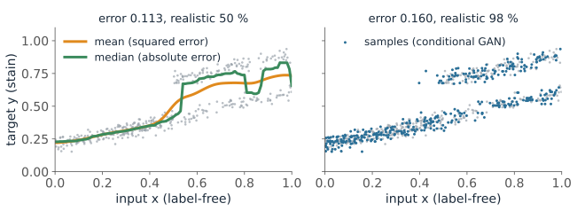
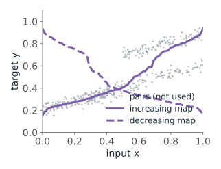
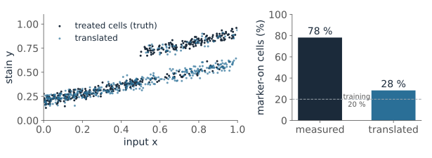

Virtual staining: predict a fluorescence channel from a transmitted-light image; also stain-to-stain (H&E to an immunostain), denoising, super-resolution.
Trained on pairs of the same field imaged both ways. Saves a channel, photodamage, a staining step.
The nuclei are visible in the input; the spots are not. Every translator must invent them somehow (sketch above).
Paired translation: a regression network
A U-Net maps the input image to the target image, trained on pairs with a pixel loss.
Squared error (L2): the output converges to the average of all targets seen with similar inputs: the conditional mean.
Where the input decides the target (nuclei): fine. Where it does not (spots on or off): a value no real cell has (left, orange: halfway between the branches).
Absolute error (L1): the median: one branch or the other, jumping.

0.5 the pairs split into two branches 0.3 apart (marker off and on). Left: the mean curve (orange) runs between the branches, the median (green) jumps between them; error 0.113, 50 % realistic. Right: samples of a conditional GAN (blue) lie on both branches; error 0.160, 98 % realistic.">
Conditional GANs (paired)
pix2pix (Isola et al., 2017): the regression network becomes a generator, judged by a discriminator that sees pairs:
D gets (input, output) and says whether this is a real pair. So the output must look real and fit the input.
Plus an L1 term that keeps the output close to the measured target.
D judges small patches (say 70 × 70 pixels): it checks texture and sharpness, and the L1 term the large shapes.
The adversarial part is the GAN of the first unit with the input as extra condition: at its optimum, G(\mathbf x, \cdot) is distributed like p(\mathbf y\mid\mathbf x).
The L1 part alone is minimised by the conditional median; the sum trades sharpness against staying near the measurement (\lambda = 100 in the original).
In practice the generator often ignores \mathbf z and becomes nearly deterministic: one sharp guess, not a distribution.
Three translators, one ambiguous pixel
what the loss pulls towards
output where the input is ambiguous
error vs truth
realistic?
squared error: conditional mean
between the possibilities
smallest (0.113)
no (50 %)
absolute error: conditional median
one possibility, chosen by the majority
0.131
yes (99 %)
conditional GAN: a sample of p(y\mid x)
a random possibility, sharp
largest (0.160)
yes (98 %)
Realism and accuracy pull in opposite directions where the input does not decide the target.
A sample is exactly as plausible as a real cell, and wrong half the time in the ambiguous part.
The math: what each loss converges to
For one input x, let Y be the target’s conditional distribution.
\mathbb E(Y - c)^2 is minimised by c = \mathbb E[Y] (the mean); \mathbb E|Y - c| by any median of Y.
A sample \hat Y drawn independently from the same distribution: \mathbb E(\hat Y - Y)^2 = 2\operatorname{Var}(Y), twice the mean’s error \operatorname{Var}(Y): a factor \sqrt 2 in RMSE.
Two branches \pm g/2 with probability ½ each: the mean’s RMSE is g/2, the sample’s g/\sqrt 2. With g = 0.3: 0.15 and 0.21 (plus noise).
Try it: one pixel, three translators
Unpaired translation: cycle consistency
Often there are no pairs: label-free images from one experiment, stained images from another.
CycleGAN (Zhu et al., 2017): two generators, F: A → B and G: B → A, each with a discriminator in its target domain.
Plus cycle consistency: translating there and back must return the original, G(F(a)) \approx a.
Learns “what stained images look like” and a map that can be undone.
The GAN terms make F(a) distributed like the B images and G(b) like the A images: they match distributions, not pairs.
The cycle terms ask F to be invertible. Every invertible map that matches the distributions has zero cycle loss.
In 1D: both the increasing and the decreasing quantile mapy = F_B^{-1}(F_A(x)) or F_B^{-1}(1 - F_A(x)) match the distributions exactly and invert exactly.
What unpaired training cannot know
Matching two distributions does not fix which input goes with which output.
In the demo’s one pixel, an increasing and a decreasing map are equally good by every unpaired criterion (right). Neither follows the true pairs.
On images, a cycle-consistent network can swap structures, or hide the information it needs to undo the map as invisible low-amplitude patterns in its output (Chu et al., 2017).
Use unpaired translation for appearance (style, intensity distribution), not for content you will measure.

Hallucination
Hallucination: generated detail that looks right but is not in the sample.
A sharp translator must invent what its input does not show: spots, textures, fine structure beyond the resolution.
It invents what was typical in training. A translator trained on normal cells paints normal cells.
No warning sign in the image itself: hallucinations are, by construction, realistic.

Demo, preset “treated test cells”: trained where 20 % of cells are marker-on; on treated cells (78 % on) the translation reports 28 %. The treatment effect has vanished, and every translated value looks real.
How to check a translator
Held-out ground truth: image some fields both ways and compare, with the readout you will use (counts, intensities, areas), not just the look. Include treated conditions.
Uncertainty: run the generator with several noise values, or several trained models; where they disagree, the input does not decide the output (the demo’s spread jumps from 0.03 to 0.14 where the marker is hidden).
Never measure on generated images without (1). Use them for display, for guiding a segmentation, or to decide where to image properly.
Report the method; keep and show the raw input.
The checks as pseudocode
for every held-out field with input x and measured target y:
samples = [G(x, z) for 16 noise values z] # or 16 trained models
spread = standard deviation of the samples, per pixel
error = |mean of samples − y|, per pixel
compare the readout (count, intensity) on y and on the samples
report: error and readout difference, per condition (control, treated)
check: is the spread large where the error is large?
A small error on control images says nothing about treated ones.
Summary
Idea
In one line
Paired translation
regression on pairs: L2 → conditional mean (blur), L1 → median
Conditional GAN
D judges (input, output) pairs: sharp, realistic, but a guess where the input is ambiguous
Accuracy vs realism
the mean has the smallest error, a sample √2 times more
Unpaired, cycle-consistent
matches distributions; does not know which input belongs to which output
Hallucination
invented detail looks real; it copies what was typical in training
Checks
held-out truth with the real readout, per condition; disagreement between samples; never measure unvalidated